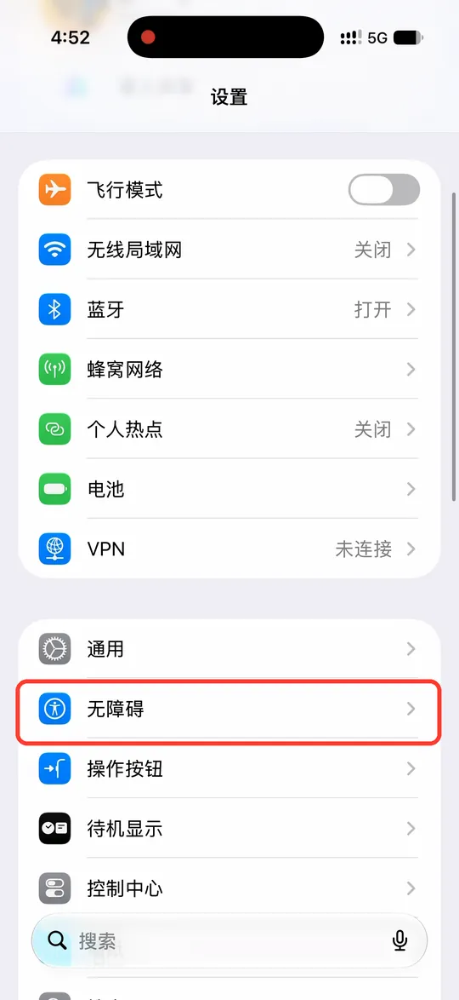
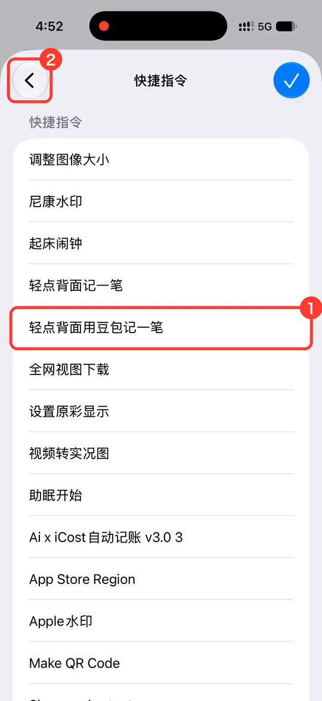
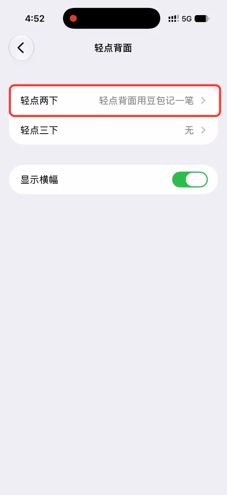
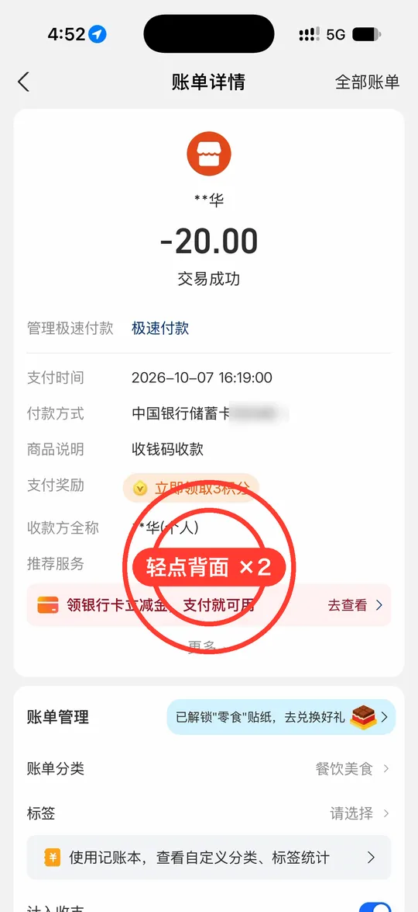
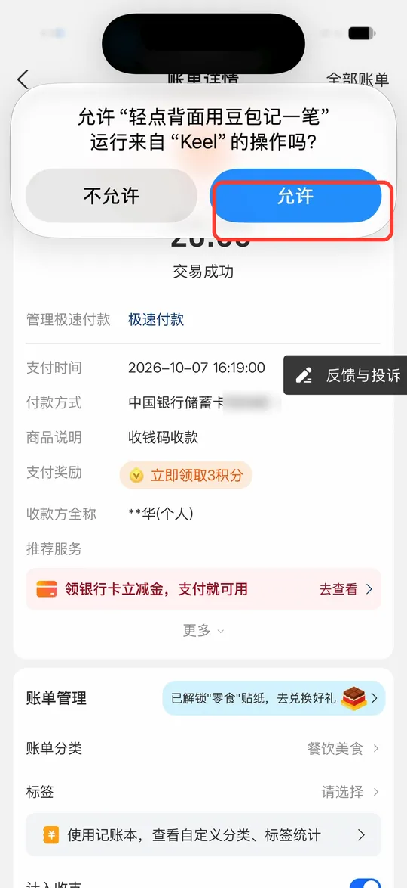
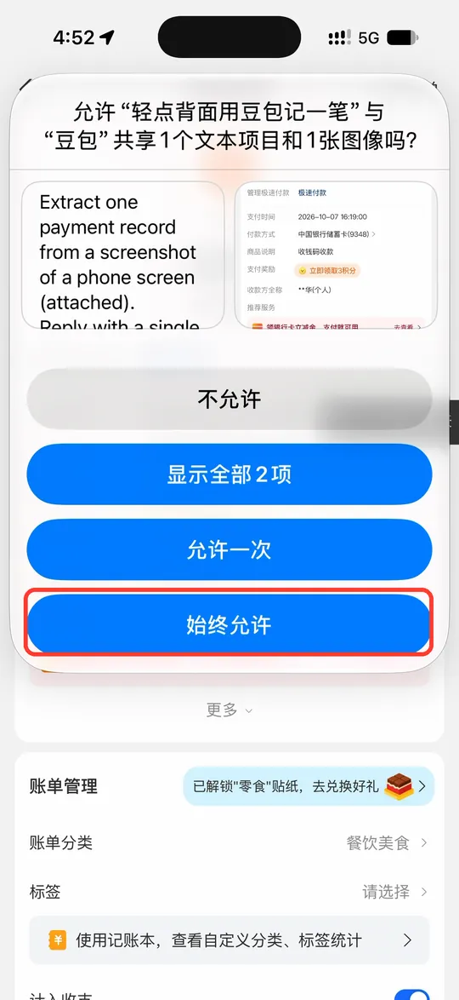
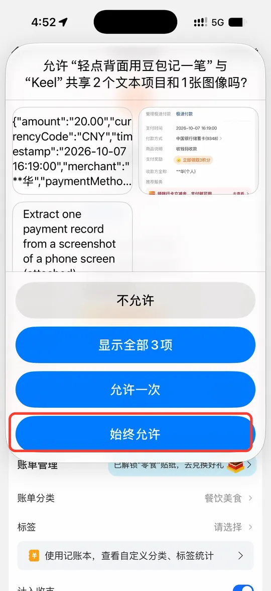
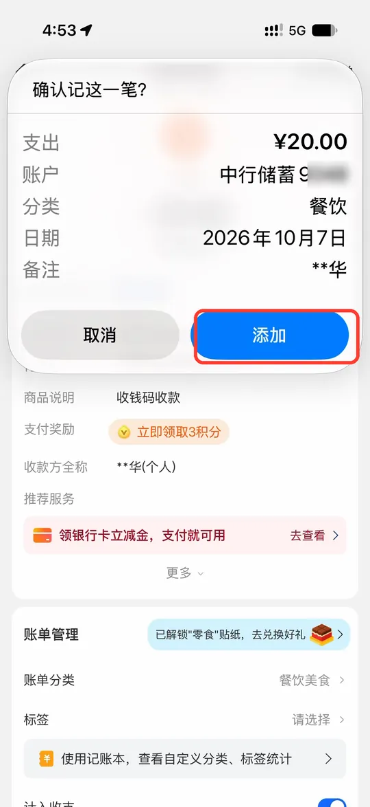

轻点背面用豆包记一笔
在支付宝、微信、银行 App 的账单页面，轻点手机背面两下：系统截一张屏，交给你手机上的豆包识别，十几秒后司元弹出确认，点「添加」就记好了。全程免费，不用打开司元。
要准备的
- 司元
- 豆包（App Store 免费下载，登录一次）
- 快捷指令（系统自带）
- iPhone 8 及以后的机型
不确定是哪个版本：打开「设置 › 通用 › 关于本机」，看「iOS 版本」。两个版本只差一处：iOS 26 里「无障碍」叫「辅助功能」。
先看一遍演示（1 分 50 秒）
前半段在司元里装快捷指令，后半段在系统「设置」里指定、再实际记一笔（真机录制，等豆包识别的十几秒已剪掉）。每一步都有字幕，红框是要点的地方。
-
把快捷指令装进来
-
打开司元，点首页右上角的齿轮，依次点「助手、Siri 与快捷指令」 › 「用豆包识别」。


-
点「轻点背面记一笔」，再点蓝色按钮「添加到快捷指令」。
-
在弹出的面板里点「快捷指令」，跳过去后点底部的「添加快捷指令」。
添加好以后会打开这条快捷指令的编辑页，里面什么都不用改，直接去下一步。
-
-
在系统「设置」里指定它
这一步在 iPhone 自带的「设置」里做，不是司元的设置。
-
打开「设置」，点「无障碍」「辅助功能」。

-
在「动作交互」下面点「触控」，往下翻到底，点「轻点背面」。
-
点「轻点两下」，在弹出的列表里往下翻，点「快捷指令」。
-
① 选「轻点背面用豆包记一笔」（右边出现对勾），② 点左上角返回。

列表里还有一条「轻点背面记一笔」，那是不用豆包、由司元在本机识别的版本，别选错。
-
「轻点两下」后面显示「轻点背面用豆包记一笔」，就设好了。

-
-
试一下
第一次运行时系统会问三次权限，都点允许；问过以后，再用就只剩最后一步的确认。
-
打开一张付款记录（比如支付宝里的账单详情），轻点手机背面两下。手机背面靠上、摄像头下面一点的位置最灵。

-
问能不能运行司元的操作，点「允许」。

-
问能不能把截图交给豆包，点「始终允许」。之后豆包识别要十几秒，等着就好。

-
问能不能把豆包的结果交给司元，同样点「始终允许」。

-
司元弹出「确认记这一笔？」，金额、账户、分类、日期、备注都填好了。核对后点「添加」就记进账本；不对就点「取消」。

-


常见问题
轻点背面没反应
- 回到第 2 步，看「轻点两下」后面是不是「轻点背面用豆包记一笔」。
- 点得太轻或太慢都不算，像敲门一样快速敲两下；戴着厚壳可能不灵。
- iPhone 8 以前的机型没有「轻点背面」。
快捷指令里显示「未知操作」「此操作需要安装“豆包”」
手机上还没装豆包。去 App Store 装好、打开并登录一次，回来就正常了。

每次都问「允许」
问共享截图和结果的那两次，选的是「允许一次」。下次弹出时改点「始终允许」即可。
识别得不对
确认弹窗里点「取消」就不会记。截图尽量让金额、商户、时间都在屏幕上，账单详情页比列表页准得多。
发给豆包的是什么
这一张截图，以及你在司元里的收支分类名称（让豆包按你的分类归类）。记到哪个账户由司元在本机对照，你的账户名称和账本内容不会发出。豆包怎么处理这些内容，以豆包的隐私政策为准。不想把截图发给第三方，可以改用不经过豆包的「轻点背面记一笔」，由司元在本机识别。
不想用了
在「设置 › 无障碍辅助功能 › 触控 › 轻点背面 › 轻点两下」里改回「无」，再到「快捷指令」里删掉这条快捷指令即可，司元里的账不受影响。